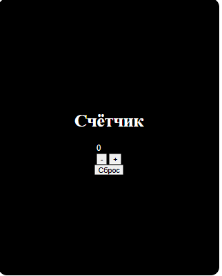
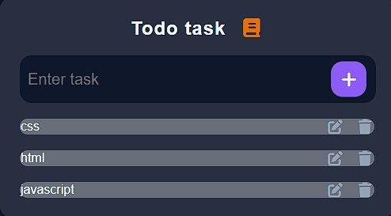
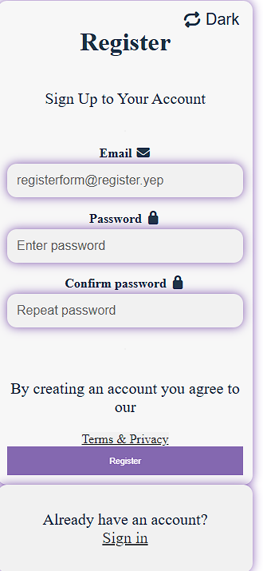
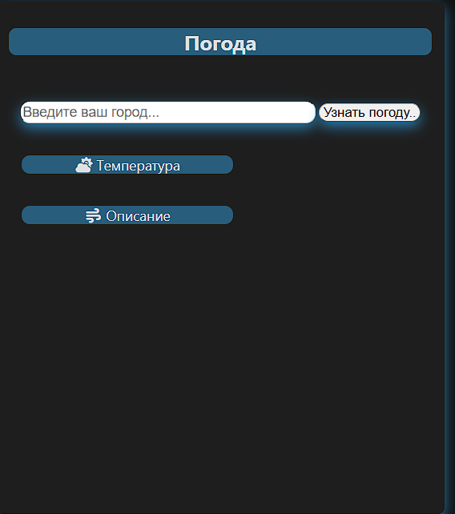

Ability to increase, decrease, and reset the value

Here you can write down your to-do list.

This is the most functional project of mine to date. Admittedly, it lacks an API.

An app that lets you check the weather in your city.